Extra Credit (in order): File write, multiple spheres, toon shading, triangle shapes, anisotropic BRDF, full raytracer
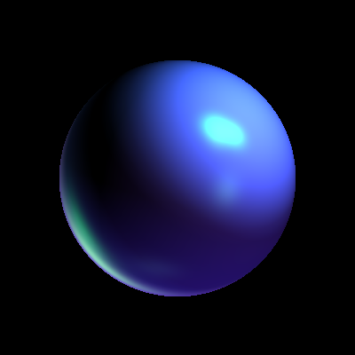
5 directional, 5 point lights.
./as1 -ka 0 0 0 -kd 0.55231 0.232 0.5612 -sp 30 -ks 0.262344 0.623421 0.1233 -dl -0.5 0.1234 -0.42 0.235 0.263 0.5 -pl 1.512 1.123 1.132 0.125 0.643 0.6423 -dl 0.125 0.125 0.125 0.125 0.125 0.125 -dl 0.6423 0.346 0.634 0.124 0.623 0.623 -dl 0.12312 0.512 0.1231 0.1231 0.123 0.5612 -dl 0.125 0.1245 0.321 1 1 1 -pl 1.512 1.3123 1.312 0.123 0.6236 0.623 -pl 1.1236 1.1236 1.6234 0.23460 0.3462 0.2346 -pl 1.2346 1.6342 1.423 0.123 0.632 0.6432 -pl 1.1236 1.6423 1.6423 0.123 0.632 0.6432 -w results/max_lights.png
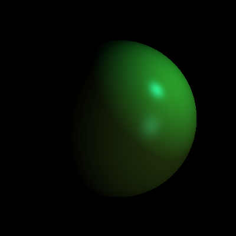
One directional, one point light.
./as1 -ka 0 0 0 -kd 0.521 0.72 0.2 -sp 30 -ks 0.214 0.621 0.623 -dl -0.5 0.1234 -0.42 0.235 0.263 0.233 -pl 1.512 1.123 1.132 0.125 0.643 0.6423
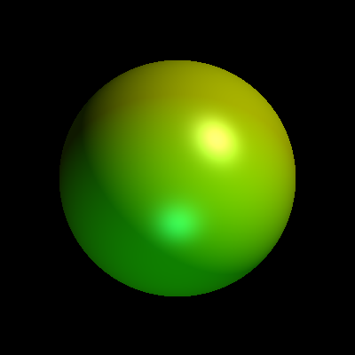
Sphere with directional, point light, ambient, diffuse and specular shading.
./as1 -pl 200 200 200 0.6 0.6 0.6 -dl 0 1 -1 0 0.4 0.4 -kd 1 1 0 -ka 0.1 0.1 0 -ks 0.8 0.8 0.8 -sp 16
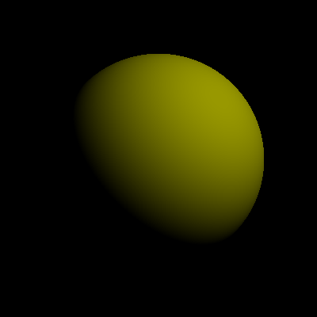
Sphere with only diffuse.
"-pl 200 200 200 0.6 0.6 0.6 -kd 1 1 0"
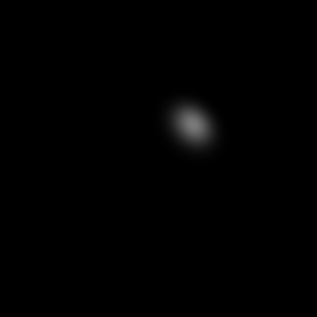
Sphere with only specular.
-pl 200 200 200 0.6 0.6 0.6 -ks 0.8 0.8 0.8 -sp 16
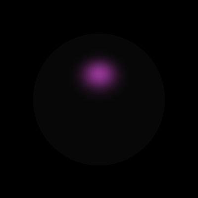
Directional light on a sphere with only specular.
./as1 -dl 0 -1 -1 0.6 0.6 0.6 -ks .9 .3 .9 -sp 10 -ka .05 .05 .05 -w results/specular_directional.png
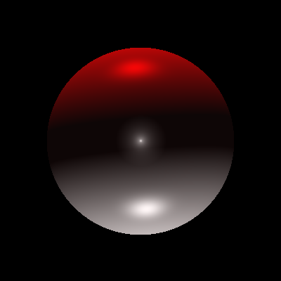
Pokeball speaks for itself. Stolen from last semester's piazza.
./as1 -ka .03 .02 .02 -kd 1.0 1.0 1.0 -ks .65 .65 .65 -pl 0.5 -6.0 0.5 .7 .7 .7 -pl -0.5 6.0 -0.5 .7 0.0 0.0 -pl 0.0 0.0 1.04 .5 .5 .5 -sp 20.0 -w results/pokeball.png

Multiple sphere with a point light at center and a directional light.
./as1 -newsphere 100 100 60 -ka .1 .1 .1 -kd .3 .5 .7 -ks .7 .7 .7 -sp 10 -newsphere 300 100 70 -ka .05 .05 .05 -kd .5 .2 .7 -ks .3 .3 .3 -sp 4 -newsphere 300 300 50 -kd .1 .1 .8 -ks .8 .8 .8 -sp 40 -pl 0 0 1 2 2 2 -w results/multiple_sphere.png -dl 0 1 -1 .3 .6 .8
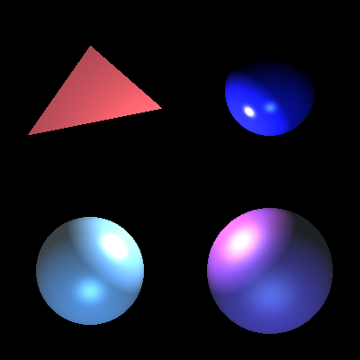
Added 2D triangle shape.
./as1 -newsphere 100 100 60 -ka .1 .1 .1 -kd .3 .5 .7 -ks .7 .7 .7 -sp 10 -newsphere 300 100 70 -ka .05 .05 .05 -kd .5 .2 .7 -ks .3 .3 .3 -sp 4 -newsphere 300 300 50 -kd .1 .1 .8 -ks .8 .8 .8 -sp 40 -pl 0 0 1 2 2 2 -dl 0 1 -1 .3 .6 .8 -newtriangle 30 250 0 180 280 0 100 350 0 -kd .9 .3 .3 -ks .9 0 0 -sp 10 -w results/with_triangle.png
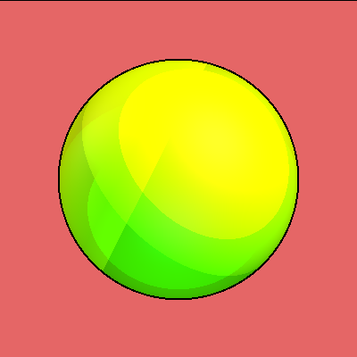
Implemented basic toon shading. Discretizes colors based on whether the color generated by a light source is mostly ambient, ambient + diffuse, or all.
./as1 -pl 200 200 200 0.6 0.6 0.6 -dl 0 1 -1 0 0.4 0.4 -kd 1 1 0 -ka 0.1 0.1 0 -ks 0.8 0.8 0.8 -sp 5 -t -pl -2 1 0 .3 .3 .3 -w results/basic_toon.png
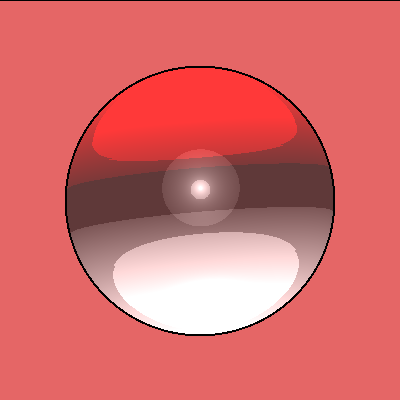
TOON POKEBALL IS THE BEST.
./as1 -ka .03 .02 .02 -kd 1.0 1.0 1.0 -ks .65 .65 .65 -pl 0.5 -6.0 0.5 .7 .7 .7 -pl -0.5 6.0 -0.5 .7 0.0 0.0 -pl 0.0 0.1 1.04 .5 .5 .5 -sp 20.0 -t -w results/toon_pokeball.png
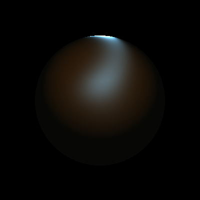
Basic example use of the anisotropic phong BRDF shading.
./as1 -newsphere -a 200 200 130 -rs .4 .7 .9 -rd .7 .7 .5 -nu 10 -nv 10 -pl 0 1 2 1 1 1 -ka .03 .03 .02 -w results/anisotropic_bdrf_2.png
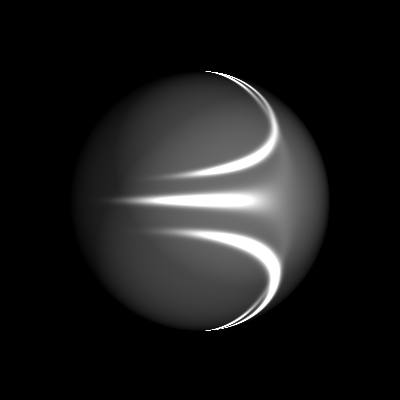
Higher phong exponents n_u and n_v generate stronger specular effects.
./as1 -newsphere -a 200 200 130 -rs .3 .3 .3 -rd .6 .6 .6 -nu 10 -nv 1000 -pl 1 1 2 1 1 1 -dl 0 0 -1 .4 .4 .4 -dl -1 1 -1 .3 .3 .3 -w results/anisotropic_bdrf_1.png
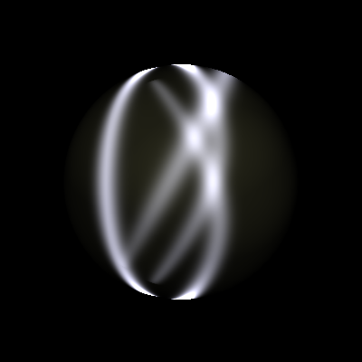
n_u and n_v specify which direction the specularities run in. The anisotropic model can more accurately depict surfaces like brushed metal. The full benefits cannot be seen in this simple shading exercise, where there is no floor, and the objects are spherical. Better images will have to wait until the raytracer.
./as1 -newsphere -a 200 200 130 -rs .7 .7 .8 -rd .5 .5 .5 -nu 100 -nv 1 -pl 1 1 2 1 1 1 -pl 1 -1 2 1 1 1 -pl -3 0 1.2 1 1 1 -pl -.5 3 2 1 1 1 -w results/anisotropic_bdrf_3.png
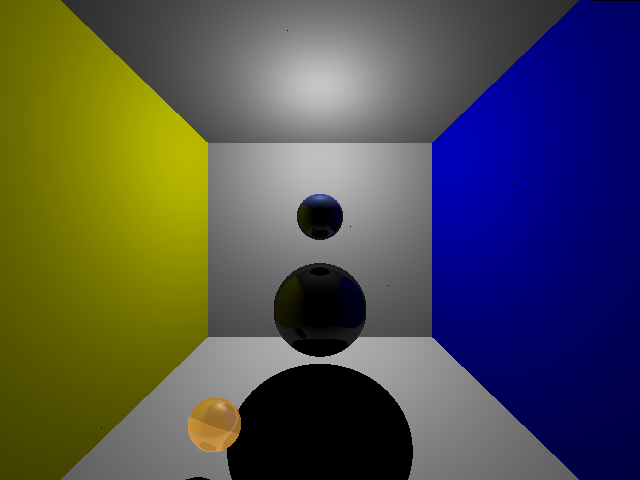
A full raytracer generates shadows and mirroring effects. The top sphere is close to the point light directly above it, and shadows the bottom sphere, which is dimly lit by a forward directional light. The left sphere is not shadowed, but is has the same diffuse coefficients as the bottom sphere for reference. ./as1 -newsphere 0 -.3 .2 -z -1.5 -kd .7 .5 .3 -ks .2 .2 .2 -sp 15 -newsphere 0 .1 .1 -z -1.5 -kd .2 .3 .8 -ks .2 .2 .2 -newsphere -.4 -.7 .1 -z -1.2 -ka .7 .5 .2 -ks .2 .2 .2 -r -w results/shadowtracer.png
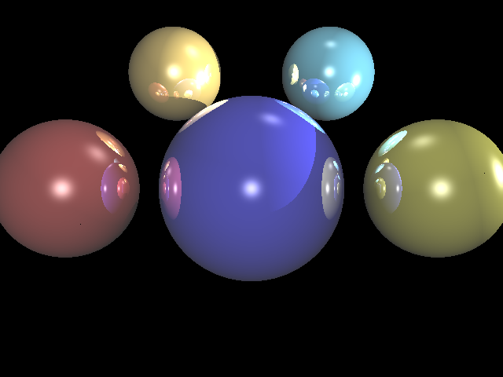
Using the recursive ray tracing with a depth limit of 5 and high specularity, we can generate strong reflections.
./as1 -newsphere 0 0 .2 -kd .2 .2 .8 -ks 1 1 1 -sp 70 -pl 0 0 2 .6 .6 .6 -newsphere .4 0 .15 -kd .6 .6 .2 -ks 1 1 1 -sp 30 -b -r -newsphere -.4 0 .15 -kd .6 .2 .2 -ks 1 1 1 -sp 30 -pl .2 .7 .1 .3 .3 .3 -pl .8 .1 .1 .9 .9 .9 -newsphere .2 .3 .12 -z -.2 -kd .3 .6 .7 -ks 1 1 1 -sp 50 -newsphere -.2 .3 .12 -z -.2 -kd .7 .6 .3 -ks 1 1 1 -sp 30 -w results/shadowtracer_2.png

One large sphere is in front of the camera, and one behind; a point light rests where the camera is, causing recursive, powerful illumination.
./as1 -newsphere 0 0 .8 -kd .1 .4 .8 -ks 1 1 1 -sp 50 -newsphere 0 0 .8 -z 1.5 -kd .7 .1 .7 -ks 1 1 1 -sp 50 -pl 0 0 1 1 1 1 -r -w results/shadowtracer_3.png